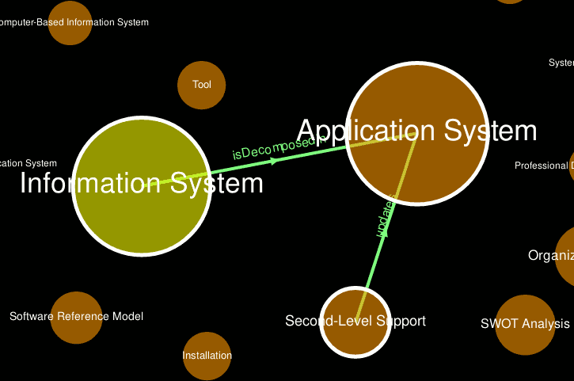

SNIK Graph Help

What is SNIK Graph?
SNIK Graph is the research prototype of a graph visualization of the Hospital Information Management ontology created by the SNIK research project of the IMISE research group of the medical faculty of the University of Leipzig.
The graph consists of nodes, which are concepts from the ontology, and edges between nodes, which are relationships (properties) between concepts. Select an edge to see the edge label (relationship type) and direction.
Context Menu
Right click on a node to open the context menu and choose among:
Browse
Opens the node in an RDF browser, which shows all its properties and values.
Submit Feedback
If you are a domain expert and notice incorrectly modelled facts or connections of a node.
Shortest Path

Requires a selected source node.
The shortest path highlights all nodes and edges in the shortest path between a selected source and the target node.
Displaying a shortest path hides all other and edges.
Spider Worm

Requires a selected source node.
The so called Spider Worm consists of the shortest path between a selected source and target node plus all edges of the target node and the other node of each of those edges.
Displaying a spiderworm hides all other nodes and edges.
Requirements and Technical Problems
SNIK Graph runs in your browser using JavaScript, so any modern browser with activated JavaScript should work. Obviously this includes deactivating noScript and similar extensions.
If you encounter technical problems, please submit a bug report ticket.